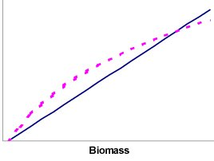
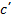

This can be illustrated using a model of the Gulf of Thailand (Christensen, 1998) along with time series data from research vessel surveys in the Gulf, an initial simulation using default settings throughout (most notably a default vulnerability setting of 2 for all predator-prey interactions) produces the fit shown in Figure 3.10 for the ‘large piscivores’ group. During the time period included the fishing intensity increased with more than an order of magnitude. The model (solid line) shows a clear decline in biomass over the time, while the CPUE from the surveys (dots) indicates much less decline over time. As described above we have some handles that can be used to manipulate how Ecosim models the growth of the population. Panel B thus shows the effect of raising the groups total mortality rate from 0.8 year-1 to 1.2 year-1. The effect of this is to make the group much better able to tolerate the grossly increased fishing intensity over time, but it is also clear that a 50% increase in the initial mortality rate setting is insufficient to optimize the fit over time. A second handle is therefore invoked. The vulnerability setting affects how the consumption is influenced by changes in predator and prey abundance. Using the default setting of 2 (panels A and B) corresponds to assuming that if the biomass of large piscivores was increased drastically they would be able to double the predation mortality they are causing their prey. Changing the value to 1.01 for all prey of the large piscivores makes prey availability largely independent of changes in the predator abundance. As the increased fishery leads to a reduction in the biomass of large piscivores, those remaining will have a good time (from a food perspective: their consumption rate will increase, and this will tend to counterbalance the increased fishing pressure). The result is increased resilience as can be seen from panels C and D in Figure 3.10. Comparing panels B and C shows that the fit is better through incorporating bottom-up control, while panel D shows the best fit overall.
For illustration the panels E and F are included in See Figure 3.10. Biomass over time (lines) for ‘large piscivores’ in the Gulf of Thailand. P/B is the production/biomass ratio (equals Z, the total mortality) for the group, while v is the vulnerability setting describing how the group interacts with each of its prey groups. Dots represent CPUE from surveys." to show the effect of using a high vulnerability (v=100) for the interactions between the large piscivores and each of its prey groups. It is apparent that this does not result in any improvement in fit between model and CPUE, but in fact in the opposite. The best fit in the example is thus obtained using the parameter settings of panel D.

Figure 3.9 The solid line shows the predicted mortality calculated as Z ·B, and the dotted line the population growth estimated as a function of the consumption. The area between the lines can be considered ‘surplus production’.

Figure 3.10 Biomass over time (lines) for ‘large piscivores’ in the Gulf of Thailand. P/B is the production/biomass ratio (equals Z, the total mortality) for the group, while v is the vulnerability setting describing how the group interacts with each of its prey groups. Dots represent CPUE from surveys.